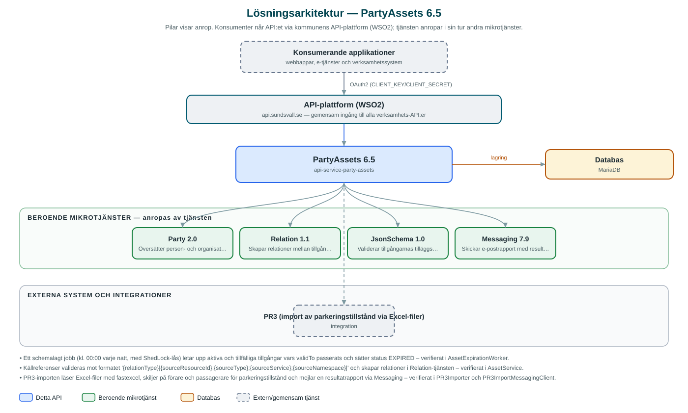

PartyAssets
Register över tillstånd och andra tillgångar som en part – invånare eller företag – har hos kommunen, till exempel parkeringstillstånd.
Om API:et
PartyAssets håller reda på tillgångar (assets) som kommunen utfärdat till en part, exempelvis tillstånd och kort. Varje tillgång knyts till en part via partyId och beskrivs med typ, giltighetstid, status, statusorsak och valfria tilläggsparametrar. Verksamhetssystem kan därmed slå upp vilka engagemang en invånare eller ett företag har hos kommunen utan att själva hålla egna register.
API:et stödjer hela livscykeln: tillgångar kan skapas som utkast, aktiveras, uppdateras, ersättas av nya versioner och avslutas. Ett schemalagt jobb sätter automatiskt status till utgången när giltighetstiden passerats. Tilläggsparametrar kan valideras mot JSON-scheman, och tillgångar kan kopplas till resurser i andra system via kommunens Relation-tjänst.
Tjänsten innehåller även en importfunktion för parkeringstillstånd från systemet PR3: en Excel-fil läses in, tillstånden registreras som tillgångar och resultatet skickas som e-postrapport via Messaging.
Det här gör API:et
- Registrera tillgångar – Tillgångar skapas per part med typ, giltighetstid, status, statusorsak och valfria tilläggsparametrar.
- Sök och uppslag – Tillgångar söks fram per kommun och part med filtrering på bland annat typ, status och giltighet; utkast hanteras separat.
- Utkast och ersättning – Tillgångar kan skapas som utkast och senare aktiveras, samt ersättas av nya versioner med spårbar koppling till den ersatta tillgången.
- Automatisk utgång – Ett dagligt schemalagt jobb sätter status till utgången för aktiva och tillfälliga tillgångar vars giltighetstid passerats.
- Statusorsaker som metadata – Giltiga statusorsaker per status administreras som metadata per kommun.
- Schemavalidering – Tilläggsparametrar kan valideras mot JSON-scheman via kommunens JsonSchema-tjänst.
- PR3-import – Parkeringstillstånd importeras från Excel-filer ur systemet PR3 och resultatet rapporteras via e-post.
API-dokumentation
API:ets samtliga resurser, parametrar och datamodeller finns beskrivna i en OpenAPI-specifikation som är hämtad ur källkodsförrådet. Den kan utforskas interaktivt i Swagger UI eller laddas ner som YAML.
Teknisk dokumentation
Nedan beskrivs hur tjänsten är uppbyggd, vilka andra tjänster den anropar och vad som krävs för att driftsätta den. Informationen är härledd ur källkoden och dess konfiguration på GitHub.
Arkitektur

API:et är en mikrotjänst (Java 25, Spring Boot via kommunens gemensamma tjänsteplattform dept44 (8.0.8), byggd med Maven). Konsumenter når tjänsten via kommunens gemensamma API-plattform (WSO2) på api.sundsvall.se – tjänsten anropas aldrig direkt. Tjänsten anropar i sin tur andra mikrotjänster i kommunens tjänstelandskap. Lagring: MariaDB med Flyway-migrationer; tillgångar, statusorsaker och JSON-scheman lagras i databasen. Övriga integrationer som förekommer i koden: PR3 (import av parkeringstillstånd via Excel-filer).
Teknikstack
- Språk: Java 25
- Ramverk: Spring Boot via kommunens gemensamma tjänsteplattform dept44 (8.0.8), byggd med Maven
- Databas: MariaDB med Flyway-migrationer; tillgångar, statusorsaker och JSON-scheman lagras i databasen
- Övrigt: Resilience4j (circuit breakers mot beroende tjänster), ShedLock för schemalagda jobb, fastexcel för PR3-importen
Beroenden till andra mikrotjänster
Tjänsten anropar följande mikrotjänster. Versionerna är hämtade ur källkodens integrationsklienter.
| Tjänst | Version | Användning |
|---|---|---|
| Party | 2.0 | Översätter person- och organisationsnummer till partyId och avgör om en part är privatperson eller företag. |
| Relation | 1.1 | Skapar relationer mellan tillgångar och resurser i andra system utifrån källreferensen. |
| JsonSchema | 1.0 | Validerar tillgångarnas tilläggsparametrar mot registrerade JSON-scheman. |
| Messaging | 7.9 | Skickar e-postrapport med resultatet av en PR3-import. |
Konfiguration och driftsättning
- application.yml med URL och OAuth2-klientuppgifter för Party, Relation, JsonSchema och Messaging
- MariaDB-anslutning; databasschemat versionshanteras med Flyway
- Cron-schema och ShedLock-låstid för det dagliga utgångsjobbet
- PR3-importen kan slås av med pr3import.enabled=false
- Anrop görs per kommun – municipalityId ingår i alla API-vägar
Noterbart ur källkoden
- Ett schemalagt jobb (kl. 00:00 varje natt, med ShedLock-lås) letar upp aktiva och tillfälliga tillgångar vars validTo passerats och sätter status EXPIRED – verifierat i AssetExpirationWorker.
- Källreferenser valideras mot formatet '{relationType}|{sourceResourceId};{sourceType};{sourceService};{sourceNamespace}|' och skapar relationer i Relation-tjänsten – verifierat i AssetService.
- PR3-importen läser Excel-filer med fastexcel, skiljer på förare och passagerare för parkeringstillstånd och mejlar en resultatrapport via Messaging – verifierat i PR3Importer och PR3ImportMessagingClient.
- Sökningar exkluderar alltid utkast; utkast hämtas via en separat operation – verifierat i AssetService.
Källkod
Källkoden är öppen och finns hos Sundsvalls kommun på GitHub. I källkodsförrådet finns även instruktioner för att klona, konfigurera och starta tjänsten i egen miljö.